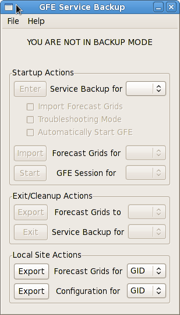
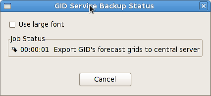
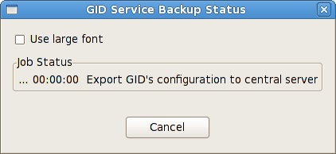

GFE Service Backup Local Site Actions
This action would normally be done prior to your local site going down for maintenance/repair/upgrade.
- Select a primary site from the drop down next to the "Export Forecast Grids" button in
the "Local Site Actions" section of the Service Backup Dialog.
If you only have a single GFE domain your primary site will already be selected.

- Click the "Export Forecast Grids" button in
the "Local Site Actions" section of the Service Backup Dialog.
- A
Service Backup Status Dialog
will open showing the status of each step required to export
your forecast grids to the central server.

This action should be performed by the GFE focal point whenever your local configuration has
been changed to ensure that the backup site will have your latest configuration should you
need to enter service backup.
NOTE: The "Export Configuration" button will only be displayed if the Service Backup
Dialog is started by a user having the GFE focalPoint permission.
Contact your AWIPS administrator if you need to have this permission assigned to you.
- Select a primary site from the drop down next to the "Export Configuration" button.
If you only have a single GFE domain your primary site will already be selected.
- Click the "Export Configuration" button.
- A
Service Backup Status Dialog
will open showing the status of each step required to export
your configuration to the central server.
